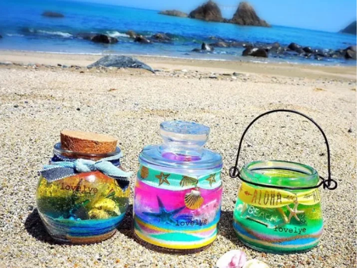
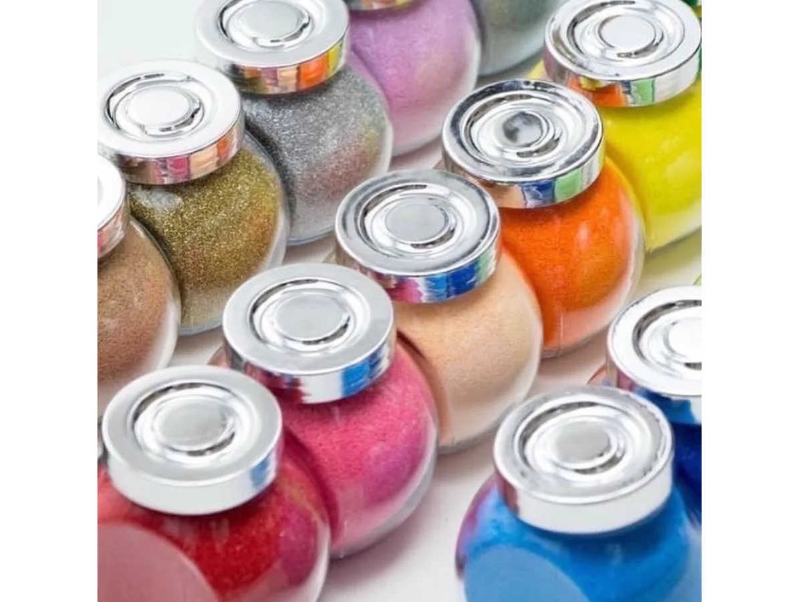
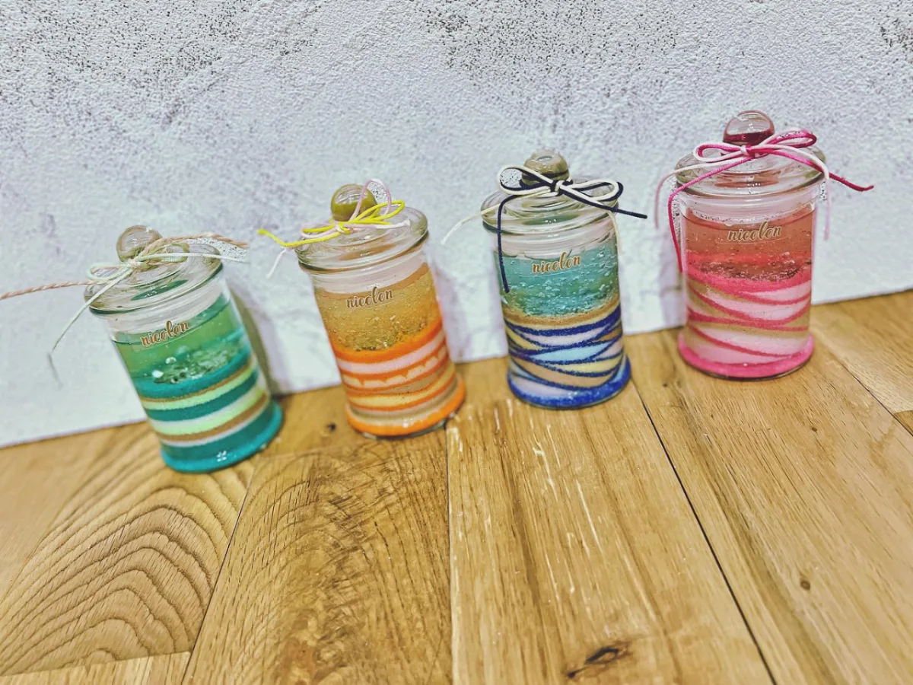
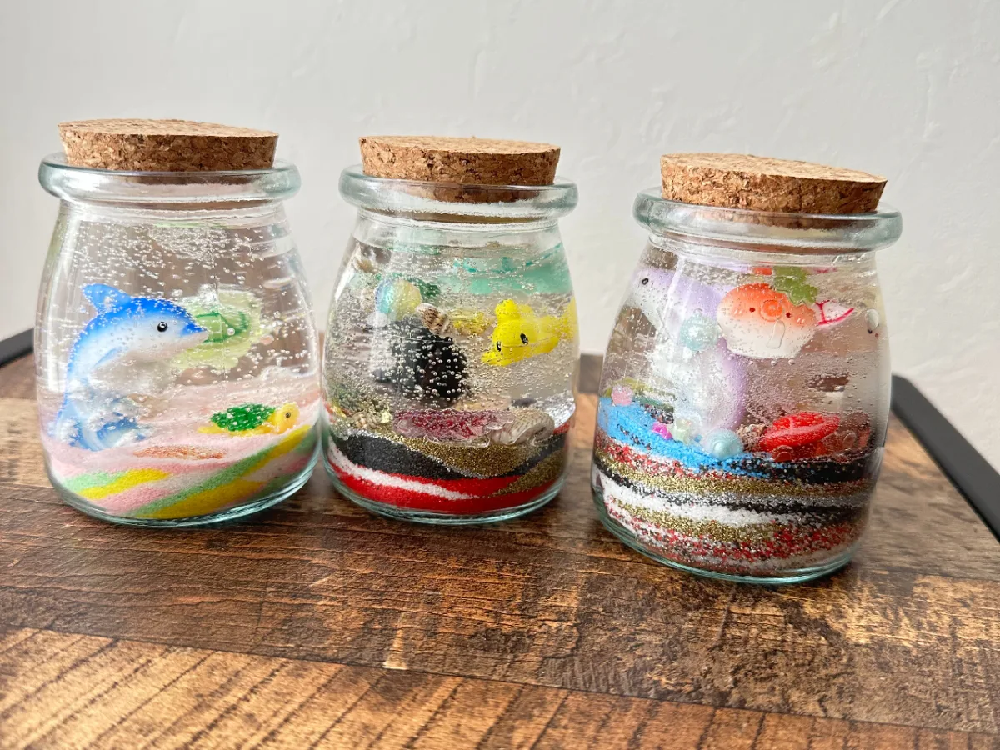

色とりどりの砂を重ねて作る、ジェルキャンドルサンド作り体験のご案内です。
色とりどりの砂を一層ずつ重ねて、透明なジェルを流し込めば——きらきら輝く世界にひとつだけのジェルキャンドルのできあがり。3歳のお子さまから大人まで、老若男女どなたでも夢中になれる体験です。夏休みの自由研究やプレゼントにもぴったり♪
ジェルキャンドルサンドってどんな体験？
ジェルキャンドルサンドは、カラーサンド（色砂）とジェルワックスを組み合わせて作る、透明感あふれるキャンドルです。グラスの中に好きな色の砂を重ね、貝殻やガラスビーズなどの飾りを置き、最後に透明なジェルを流し込んで仕上げます。
砂の層がそのまま閉じ込められ、光を通すとジェルがきらきらと輝きます。火を灯さずインテリアとして飾るのはもちろん、海や空、夕焼けなど、思い思いの風景を砂で描けるのが魅力です。

たくさんのカラーから好きな砂を選べます♪
体験プランの詳細（料金・時間・場所）
nicolon（ニコロン）のジェルキャンドルサンド体験は、講師と一緒に作る対面ワークショップです。プランの概要は以下のとおりです。
| プラン名 | サンドアートつくり（ジェルキャンドルサンド） |
|---|---|
| 料金 | 1名 2,500円〜 （材料費・体験料込み） |
| 所要時間 | 約1時間30分 |
| 対象年齢 | 3歳以上 |
| 定員 | 1〜6名 |
| 体験場所 | 福岡県内（対面ワークショップ） ※詳しい場所はご予約時にご案内します |
| お持ち帰り | 当日OK（インテリアとして飾れます） |
※ お子さまとご一緒の家族体験や、お友達同士のグループ体験も大歓迎です。人数やご希望に合わせてご案内しますので、お気軽にご相談ください。
作り方の流れ
むずかしい作業はありません。「色を選んで、砂を入れて、ジェルを流す」——たった3ステップで、誰でもきれいに仕上がります。
好きな色の砂を選ぶ
たくさんのカラーサンドの中から、お好みの色をセレクト。海をイメージした青系、夕焼けの赤系など、テーマを決めると作りやすいです。
砂を層になるように重ねる
スプーンで少しずつ砂を入れ、グラスの中に色の層を作ります。傾けたり斜めに入れたりすると、模様が生まれて世界に一つの作品に。
飾りを置いてジェルを流す
貝殻やガラスビーズなどの飾りを配置し、最後に透明なジェルを流し込んで完成。きらきら輝く仕上がりに感動♪
ジェルキャンドル作り、LINEで予約受付中♪
空き状況・日程のご相談はお気軽にどうぞ。
ご希望の人数・日程をお知らせください。
こんな方におすすめ
- 夏休みの自由研究を探している親子の方
- おでかけ・観光の思い出づくり・体験スポットを探している方
- 世界にひとつのプレゼントやお土産を作りたい方
- 雨の日でも楽しめる室内アクティビティをお探しの方
- 小さなお子さま・おじいちゃんおばあちゃんと三世代で楽しみたい方
ドライブやランチ、おでかけと合わせて立ち寄れるのも魅力。作ったジェルキャンドルを海辺や好きな場所で写真に収める——そんな素敵な一日の思い出づくりにもおすすめです。
作品ギャラリー
実際に作っていただいたジェルキャンドルサンドの作品例をご紹介します。同じ材料でも、色の選び方や重ね方で、まったく違う表情になるのが楽しいところです。

色の組み合わせは無限大。世界に一つの作品に♪

お魚やイルカの飾りを入れて、海の世界を閉じ込めて。
ご予約方法
ご予約は事前予約制です。LINEから直接ご相談・ご予約いただけます。
ご予約・お問い合わせ
- LINE：「ジェルキャンドルの予約」と送るだけ。空き状況・日程を直接ご相談いただけます。
- お問い合わせフォーム：日程やご希望の人数を添えてお送りください。折り返しご案内します。
はじめての方も、ご家族・お友達同士のグループも大歓迎です。ご希望の日程・人数をお知らせください♪
よくある質問
何歳から体験できますか？
3歳から体験いただけます。砂を入れるシンプルな作業なので、小さなお子さまから大人の方まで、老若男女問わずお楽しみいただけます。お子さまには保護者の方がサポートいただくと安心です。
作った作品は当日持ち帰れますか？
はい、当日そのままお持ち帰りいただけます。インテリアとして飾れるので、おみやげやプレゼントにもぴったりです。
どのくらい時間がかかりますか？
所要時間は約1時間30分です。色を選んで砂を重ね、ジェルを流し込んで仕上げるまで、ゆっくり楽しんでいただけます。
予約は必要ですか？
事前予約制です。LINEから直接ご相談・ご予約を承っています。ご希望の日程・人数をお知らせいただければ、空き状況をお調べしてご案内します。
世界に一つのジェルキャンドルサンドを作ろう♪
1名 2,500円〜｜3歳からOK｜当日お持ち帰り｜所要1時間半
LINEで「ジェルキャンドルの予約」と送るだけ！空き状況をお調べします。

原野 玲未REMI HARANO
サンドアート講師 / Webエンジニア / 5児の母
福岡県在住。日本サンドアート協会認定講師として年間100件以上のワークショップを開催。親子から大人まで楽しめるサンドアート・ジェルキャンドル体験を提供しています。